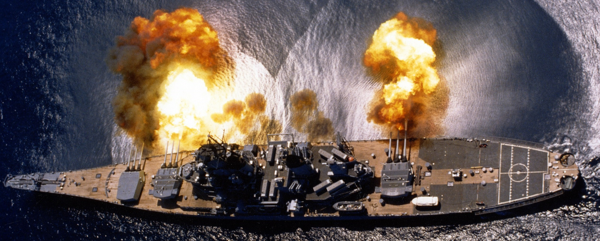
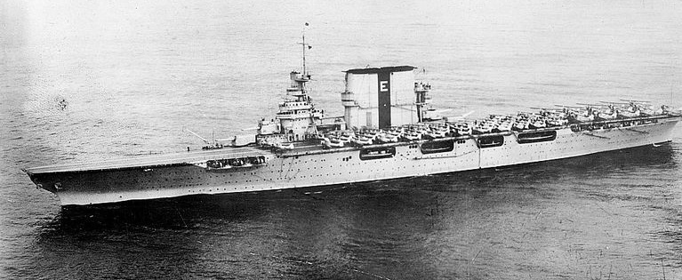

Porter Johnston
About Me
Bearing the name of both a very unlucky underaged bote and a very brave...perhaps too brave one, both who sacrificed their lives for the Allied war effort. Though probably more based off the former than the latter. I'm a hard working and very caring for my friends. I have never let down those around me and always fought to the bitter end. May the cold waters take me over my friends.
Education
Basic USN Training clearly doesn't pay off. I'm sure Ernest Joseph King, Commander in Chief, United States Fleet would agree. Couldn't even hit the biggest, slowest target moving in a straight line in the most favourable of conditions!
- Commissioned into the US Navy on the 6th July 1943
- Completed 5 weeks of battle practice with CV-11 USS Intrepid and parts of the US Atlantic Fleet
- Performed anti-aircraft drills with BB-61 USS Iowa on the 14th November 1943
- Performed torpedo drills with BB-61 USS Iowa on the 14th November 1943
Work Experience
Worked as a Torpedo Boat Destroyer in the US Navy during the War, being commissioned the 6th of July 1943, the year before D-Day. One of my earliest missions in the Atlantic shortly after basic training with my crew was a highly secretive mission. The mission was to escort the BB-61 USS Iowa carrying the Presiden of the United States of America, Franklin D. Roosevelt across the pond to the Tehran Conference. Along the way, we practiced anti-aircraft and torpedo launch drills after having maybe depth-charged some fish by accident.
Having been transferred to the Aleutian Islands for a few months, I later served in the Pacific where my career ended with the destruction of an Aichi D3A "Val" dive bomber I had shot down maintaining its momentum and somehow getting underneath my keel, exploding like a modern keel-breaker torpedo on the 10th of June 1945... Despite dauntless efforts, my fate was sealed. My commitment to my friends meant they all survived the ordeal. I hope they will remember me as the good girl I was...
